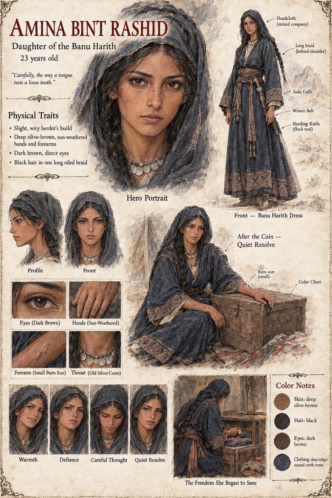

Amina bint Rashid
Daughter of the Banu Harith · Malik's wife and the dinar's second owner · twenty-two when she finds the coin answers to her, twenty-three by her sheet · murdered on the twenty-sixth of Deyren
Born two wells south of Malik's grazing grounds among the Banu Harith, in a family with slightly more goats and considerably more opinions about how a daughter ought to be disposed of. She comes to the marriage, arranged by uncles who never asked her a question to which they expected an honest answer, with a cedar chest, her mother's recipe for bread and an unconfessed hunger for the sea, which she has only heard of in the boasts of a single trader. The akad is witnessed by both families and the aging keeper of the nearest well. For her mahr Malik offers what he has, the four goats (now six), a length of good rope and the dinar, and from that hour, by every law the desert recognizes, the coin belongs to her and to no one else living.
A lung-sickness in the flock forces it from the chest, and she spends it herself, without asking Malik, which is her right under the akad, on medicine from the coast-trading caravans. It is back in the chest by the next dusk, and she sits alone in the tent understanding that whatever the coin is, it answers to her now, absolutely, for exactly as long as she wants it to. She tests the thought, the manuscript says, carefully, the way a tongue tests a loose tooth. She has never in twenty-two years made a decision another person's permission did not shadow, and she does with this door what a practical woman does: she prices it. She asks a passing apprentice wool-factor, Ibrahim ibn Nasr, what a berth on a coastal caravan costs; he gives her the figure to the last coin and asks nothing in return. In the same cedar chest she begins to keep a small store of her own: a handful of ordinary coins she has earned rather than spent from the dinar, a scrap of blue coastal cloth he let her handle and named no price for, and the written price of a berth in a hand only she can read.
She does not leave cruelly. On a cold morning she tells Malik that she requires nothing further from the akad between them and will trouble neither his ledger nor his name again, legal words chosen deliberately because precision was the last kindness she knew how to offer. The coin leaves with her, as the akad requires. On the twenty-sixth of Deyren a thief named Zaid, a stranger to her, to her clan and to the quarrel that will be built on the assumption that he was not, cuts her throat in her tent and strips it of everything of value. Her kinsmen find her three days later. Worthless to the thief and so left behind, the scrap of blue cloth and the written price lie in the tent, and no one who finds them understands that they are the last evidence of a woman who had been quietly planning, for eleven months, to go somewhere none of them would have thought to look.
Of her the poets keep exactly one detail accurately, by accident: her name. In their versions she is faithless, or wronged, or a sorceress, or a saint, or erased from a story that prefers the war to the woman it claims to have been fought for, and everyone who afterward claims to be avenging her spends more energy avenging their own certainty than asking what she might have wanted. The only person in either country who could have said what she wanted is Ibrahim ibn Nasr, who knows whose figure he once gave for a berth, and nobody asks him. The sheet draws her slight and wiry, a herder's build, with deep olive-brown sun-weathered hands and forearms, dark brown direct eyes and black hair in one long oiled braid, in a deep indigo Banu Harith dress with embroidered cuffs and a woven belt, a headcloth, a necklace of old silver coins and a herding-knife; a small burn scar shows on one forearm. The manuscript gives her no appearance and no age beyond the twenty-two; the scar, the necklace and the age of twenty-three are the sheet's. Its pull-quote is the manuscript's narration of her, not a line she speaks.
“Carefully, the way a tongue tests a loose tooth.”